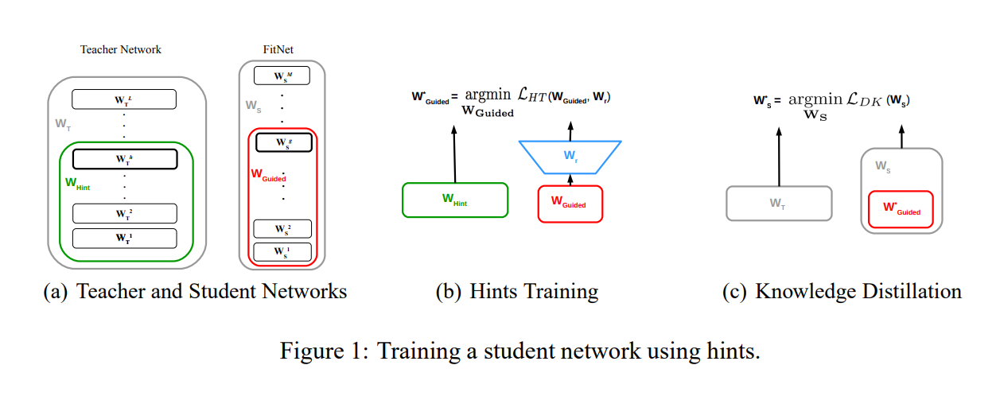

import torch
import torch.nn as nn
import torch.optim as optim
from torchvision import datasets, models, transforms
from torch.utils.data import DataLoader
import time
# Define transforms for data augmentation
data_transforms = {
'train': transforms.Compose([
transforms.RandomResizedCrop(224),
transforms.RandomHorizontalFlip(),
transforms.ToTensor(),
transforms.Normalize([0.485, 0.456, 0.406], [0.229, 0.224, 0.225])
]),
'val': transforms.Compose([
transforms.Resize(256),
transforms.CenterCrop(224),
transforms.ToTensor(),
transforms.Normalize([0.485, 0.456, 0.406], [0.229, 0.224, 0.225])
]),
}
# Load the Imagenette2-320 dataset
data_dir = './data/imagenette2-320/imagenette2-320'
image_datasets = {x: datasets.ImageFolder(root=f"{data_dir}/{x}", transform=data_transforms[x])
for x in ['train', 'val']}
dataloaders = {x: DataLoader(image_datasets[x], batch_size=32, shuffle=True, num_workers=4)
for x in ['train', 'val']}
dataset_sizes = {x: len(image_datasets[x]) for x in ['train', 'val']}
class_names = image_datasets['train'].classes
# Check device availability
device = torch.device("cuda:0" if torch.cuda.is_available() else "cpu")Knowledge Distillation Implementation 2/3
Tech
2. Hint-Based Distillation
2.Hint-Based Distillation (Intermediate Feature Matching) technique

Reference:
- Romero, A., Ballas, N., Kahou, S. E., Chassang, A., Gatta, C., & Bengio, Y. (2015). FitNets: Hints for Thin Deep Nets. arXiv preprint arXiv:1412.6550. Retrieved from https://arxiv.org/abs/1412.6550
Define Teacher and Student Models
# Load pre-trained teacher (ResNet50) and student (ResNet18)
teacher_model = models.resnet50(pretrained=True)
student_model = models.resnet18(pretrained=True)
# Adjust final layers to match number of classes in Imagenette (10 classes)
num_ftrs_teacher = teacher_model.fc.in_features
teacher_model.fc = nn.Linear(num_ftrs_teacher, 10)
num_ftrs_student = student_model.fc.in_features
student_model.fc = nn.Linear(num_ftrs_student, 10)
# Move models to the appropriate device (GPU if available)
teacher_model = teacher_model.to(device)
student_model = student_model.to(device)
# Set teacher model to evaluation mode (as it is not being trained)
teacher_model.eval()
# Define 1x1 convolution to match the dimensions between teacher and student feature maps
# Assuming teacher's layer3 outputs 1024 channels and student's layer3 outputs 256 channels
conv_teacher_to_student = nn.Conv2d(1024, 256, kernel_size=1).to(device)
Extract Intermediate Feature Representations
We need to extract intermediate features from both the teacher and the student models. One way to achieve this is by using forward hooks in PyTorch to capture activations at specific layers. In this case, we’ll extract features from a chosen layer in both models, for example, the output of the third residual block in both models.
# Helper function to register a hook for feature extraction
def extract_features(module, input, output):
return output
# Extract features from the third residual block (layer3) for both models
teacher_features = []
student_features = []
def register_hooks(model, features_storage):
def hook(module, input, output):
features_storage.append(output)
return hook
# Register hook to extract features from teacher model (layer3 output)
teacher_model.layer3[5].register_forward_hook(register_hooks(teacher_model, teacher_features))
# Register hook to extract features from student model (layer3 output)
student_model.layer3[1].register_forward_hook(register_hooks(student_model, student_features))<torch.utils.hooks.RemovableHandle at 0x21cb76104c0>Define the Custom Distillation Loss
e now define a custom loss function that combines:
- Cross-Entropy Loss on the student’s hard predictions against the ground truth labels.
- KL Divergence Loss between the teacher’s and student’s soft logits (output of final layer).
- Feature Matching Loss (e.g., L2 loss) between the intermediate feature maps of the teacher and student.
class HintBasedDistillationLoss(nn.Module):
def __init__(self, temperature=3.0, alpha=0.5, beta=0.5):
super(HintBasedDistillationLoss, self).__init__()
self.temperature = temperature
self.alpha = alpha
self.beta = beta
self.kl_div_loss = nn.KLDivLoss(reduction='batchmean')
self.ce_loss = nn.CrossEntropyLoss()
self.l2_loss = nn.MSELoss()
def forward(self, student_logits, teacher_logits, student_features, teacher_features, labels):
# Soft targets: apply temperature scaling to teacher outputs
teacher_soft = torch.softmax(teacher_logits / self.temperature, dim=1)
student_soft = torch.log_softmax(student_logits / self.temperature, dim=1)
# Distillation loss (KL divergence between student and teacher's softened outputs)
distillation_loss = self.kl_div_loss(student_soft, teacher_soft) * (self.temperature ** 2)
# Cross entropy loss (between student predictions and true labels)
student_loss = self.ce_loss(student_logits, labels)
# Feature matching loss (L2 loss between teacher and student feature maps)
feature_loss = self.l2_loss(student_features, teacher_features)
# Combined loss
return self.alpha * distillation_loss + (1.0 - self.alpha) * student_loss + self.beta * feature_lossImplement the Training Loop
def train_student(teacher_model, student_model, dataloaders, criterion, optimizer, num_epochs=25):
since = time.time()
best_model_wts = student_model.state_dict()
best_acc = 0.0
for epoch in range(num_epochs):
print(f'Epoch {epoch}/{num_epochs - 1}')
print('-' * 10)
# Set student model to training mode
student_model.train()
running_loss = 0.0
running_corrects = 0
# Iterate over the data
for inputs, labels in dataloaders['train']:
inputs = inputs.to(device)
labels = labels.to(device)
# Clear gradients for student model
optimizer.zero_grad()
# Clear the feature lists before every forward pass
teacher_features.clear() # Clear saved teacher features
student_features.clear() # Clear saved student features
# Forward pass through teacher (for soft labels and features)
with torch.no_grad(): # Disable gradients for teacher model
teacher_logits = teacher_model(inputs)
teacher_feature = teacher_features[0] # Extract intermediate feature from teacher
# Forward pass through student
student_logits = student_model(inputs)
student_feature = student_features[0] # Extract intermediate feature from student
# Apply 1x1 convolution to match teacher's feature map dimensions to student's
teacher_feature_resized = conv_teacher_to_student(teacher_feature)
# Compute loss
loss = criterion(student_logits, teacher_logits, student_feature, teacher_feature_resized, labels)
# Backward pass and optimization
loss.backward() # Compute gradients only for the student model
optimizer.step()
# Compute running statistics
_, preds = torch.max(student_logits, 1)
running_loss += loss.item() * inputs.size(0)
running_corrects += torch.sum(preds == labels.data)
epoch_loss = running_loss / dataset_sizes['train']
epoch_acc = running_corrects.double() / dataset_sizes['train']
print(f'Loss: {epoch_loss:.4f} Acc: {epoch_acc:.4f}')
# Deep copy the model
if epoch_acc > best_acc:
best_acc = epoch_acc
best_model_wts = student_model.state_dict()
# Training complete
time_elapsed = time.time() - since
print(f'Training complete in {time_elapsed // 60:.0f}m {time_elapsed % 60:.0f}s')
print(f'Best Acc: {best_acc:.4f}')
# Load best model weights
student_model.load_state_dict(best_model_wts)
return student_modelTraining and Evaluation
# Define optimizer
optimizer = optim.SGD(student_model.parameters(), lr=0.01, momentum=0.9)
# Define hint-based distillation loss
criterion = HintBasedDistillationLoss(temperature=3.0, alpha=0.5, beta=0.5)
# Train the student model
trained_student = train_student(teacher_model, student_model, dataloaders, criterion, optimizer, num_epochs=5)Epoch 0/4
----------
Loss: 0.6921 Acc: 0.8747
Epoch 1/4
----------
Loss: 0.6239 Acc: 0.9241
Epoch 2/4
----------
Loss: 0.6072 Acc: 0.9267
Epoch 3/4
----------
Loss: 0.5918 Acc: 0.9378
Epoch 4/4
----------
Loss: 0.5790 Acc: 0.9413
Training complete in 98m 5s
Best Acc: 0.9413Evaluation
def evaluate_model(model, dataloaders):
model.eval() # Set to evaluation mode
running_corrects = 0
for inputs, labels in dataloaders['val']:
inputs = inputs.to(device)
labels = labels.to(device)
with torch.no_grad(): # No need to compute gradients during evaluation
outputs = model(inputs)
_, preds = torch.max(outputs, 1)
running_corrects += torch.sum(preds == labels.data)
accuracy = running_corrects.double() / dataset_sizes['val']
print(f'Validation Accuracy: {accuracy:.4f}')
# Evaluate trained student model
evaluate_model(trained_student, dataloaders)Validation Accuracy: 0.9735